A Word-Guessing Game Based on Clues: wordle
The popular word guessing game ``Wordle’’ gained global attention, in which players are challenged to guess a five-letter word in six attempts. After each guess, the player receives feedback indicating which letters are in the correct position, which letters are correct but in the wrong position, and which letters are incorrect to help them strategise their next guess. The objective of the game is to guess the target word using the fewest possible guesses, and the game ends when the player guesses correctly or exhausts all six attempts.
Wordle (Traditional Variant)
This game evaluates three key aspects of cLLM’s capabilities. Firstly, it assesses how well the cLLM comprehends the game rules, which involves generating valid English words consisting of exactly five letters. Secondly, it measures how effectively cLLM uses guess feedback to generate its next guesses. Thirdly, it measures how quickly cLLM can guess the target word if it succeeds.
In traditional gameplay, cLLM plays the role of “Player A”, and a deterministic wordle bot plays the role of “Player B”. The game begins with the game master prompting Player A to guess the target word. The game master parses Player A’s response and forwards it to Player B, which evaluates the closeness of the guess word to the target word and returns the feedback. The game master sends the feedback to Player A for the next guess and the cycle continues until the target word is guessed correctly or all six attempts are exhausted.
Wordle (+ Clue, + Critic)
This game variant also begins with the guesser (Player A) who attempts to guess the target word based on a given clue. In contrast to other game variants, where the guessed word is immediately evaluated for its proximity to the target word, in this variant, the guessed word and the clue are forwarded to another player known as the critic, to get an opinion on the correctness of the guess. The critic responds with either agreement or disagreement, providing their rationale based on the information given. The critic’s response is then relayed to the guesser, who can decide to stick with their initial guess or change it based on the feedback received.
This game variant helps to investigate the influence of the critic’s role in the guesser’s performance and can lead to interesting possibilities in human-machine interaction, where the human can be aided by the cLLM as the critic. We tested the game using the same cLLM for both roles, as well as different cLLMs for each role, employing distinct prompts for each.
Leaderboard - Traditional
| Models | Experiment | Aborted | Lose | Main Score | Played | Success |
|---|---|---|---|---|---|---|
| 3–3 | 0_high_frequency_words_no_clue_no_critic | 30 | 70 | 0.0 | 70.0 | 0.0 |
| 1_medium_frequency_words_no_clue_no_critic | 30 | 70 | 0.0 | 70.0 | 0.0 | |
| 2_low_frequency_words_no_clue_no_critic | 40 | 50 | 4.166666666666667 | 60.0 | 10.0 | |
| 3.5–3.5 | 0_high_frequency_words_no_clue_no_critic | 0 | 100 | 0.0 | 100.0 | 0.0 |
| 1_medium_frequency_words_no_clue_no_critic | 0 | 100 | 0.0 | 100.0 | 0.0 | |
| 2_low_frequency_words_no_clue_no_critic | 0 | 100 | 0.0 | 100.0 | 0.0 | |
| 4–4 | 0_high_frequency_words_no_clue_no_critic | 0 | 80 | 4.5 | 100.0 | 20.0 |
| 1_medium_frequency_words_no_clue_no_critic | 0 | 90 | 2.0 | 100.0 | 10.0 | |
| 2_low_frequency_words_no_clue_no_critic | 0 | 80 | 4.5 | 100.0 | 20.0 | |
| cl–cl | 0_high_frequency_words_no_clue_no_critic | 0 | 100 | 0.0 | 100.0 | 0.0 |
| 1_medium_frequency_words_no_clue_no_critic | 0 | 100 | 0.0 | 100.0 | 0.0 | |
| 2_low_frequency_words_no_clue_no_critic | 0 | 100 | 0.0 | 100.0 | 0.0 | |
| flc–flc | 0_high_frequency_words_no_clue_no_critic | 100 | 0 | 0.0 | 0.0 | |
| 1_medium_frequency_words_no_clue_no_critic | 100 | 0 | 0.0 | 0.0 | ||
| 2_low_frequency_words_no_clue_no_critic | 100 | 0 | 0.0 | 0.0 | ||
| ko–ko | 0_high_frequency_words_no_clue_no_critic | 10 | 90 | 0.0 | 90.0 | 0.0 |
| 1_medium_frequency_words_no_clue_no_critic | 30 | 70 | 0.0 | 70.0 | 0.0 | |
| 2_low_frequency_words_no_clue_no_critic | 0 | 100 | 0.0 | 100.0 | 0.0 | |
| lm–lm | 0_high_frequency_words_no_clue_no_critic | 0 | 100 | 0.0 | 100.0 | 0.0 |
| 1_medium_frequency_words_no_clue_no_critic | 0 | 100 | 0.0 | 100.0 | 0.0 | |
| 2_low_frequency_words_no_clue_no_critic | 0 | 100 | 0.0 | 100.0 | 0.0 | |
| ost–ost | 0_high_frequency_words_no_clue_no_critic | 0 | 100 | 0.0 | 100.0 | 0.0 |
| 1_medium_frequency_words_no_clue_no_critic | 0 | 100 | 0.0 | 100.0 | 0.0 | |
| 2_low_frequency_words_no_clue_no_critic | 0 | 100 | 0.0 | 100.0 | 0.0 | |
| vcn–vcn | 0_high_frequency_words_no_clue_no_critic | 50 | 50 | 0.0 | 50.0 | 0.0 |
| 1_medium_frequency_words_no_clue_no_critic | 50 | 50 | 0.0 | 50.0 | 0.0 | |
| 2_low_frequency_words_no_clue_no_critic | 30 | 70 | 0.0 | 70.0 | 0.0 |
Detailed results for the wordle game (traditional variant).
Plots
METRIC - ABORTED
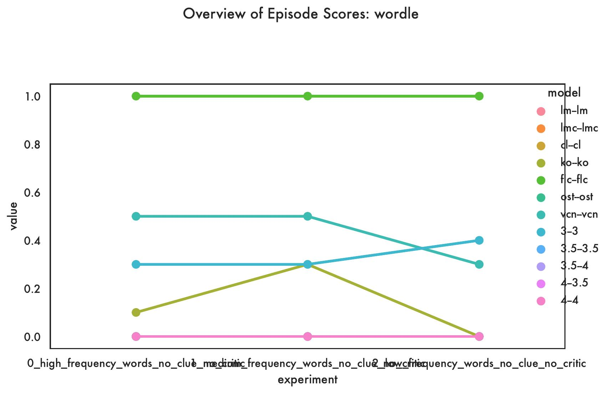
METRIC - Lose
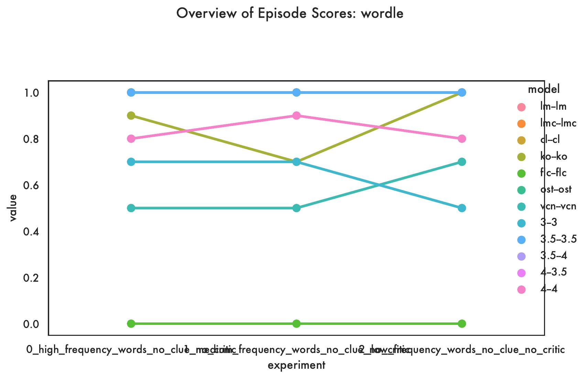
METRIC - Main Score

METRIC - Played
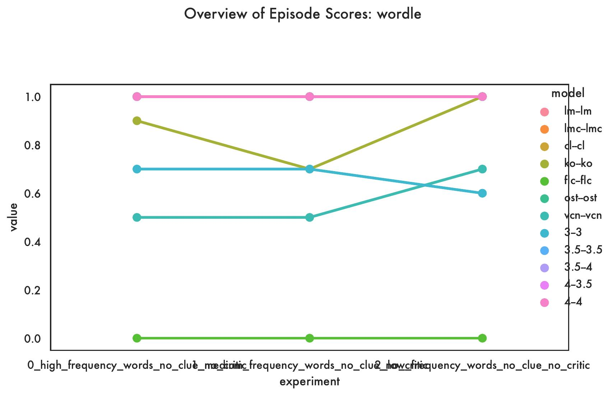
METRIC - Success
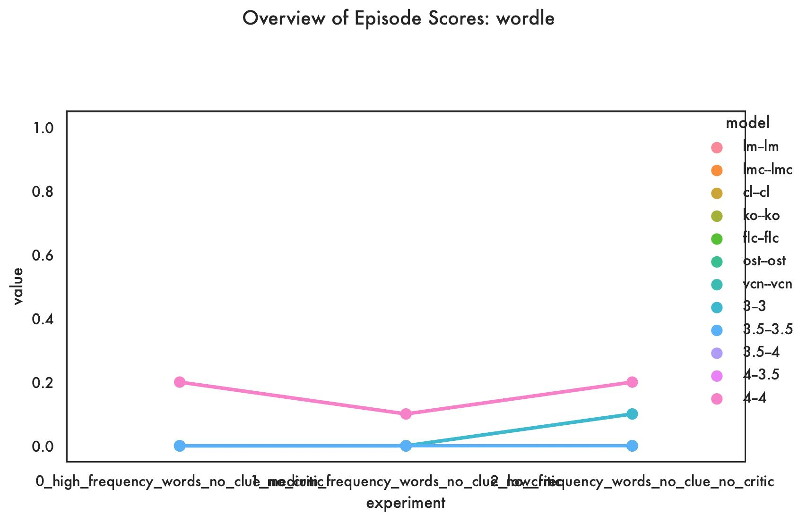
Leaderboard - With Clue
| Models | Experiment | Aborted | Lose | Main Score | Played | Success |
|---|---|---|---|---|---|---|
| 3–3 | 0_high_frequency_words_clue_no_critic | 60 | 30 | 12.5 | 40.0 | 10.0 |
| 1_medium_frequency_words_clue_no_critic | 80 | 10 | 12.5 | 20.0 | 10.0 | |
| 2_low_frequency_words_clue_no_critic | 50 | 10 | 54.0 | 50.0 | 40.0 | |
| 3.5–3.5 | 0_high_frequency_words_clue_no_critic | 10 | 90 | 0.0 | 90.0 | 0.0 |
| 1_medium_frequency_words_clue_no_critic | 10 | 70 | 22.22222222222222 | 90.0 | 20.0 | |
| 2_low_frequency_words_clue_no_critic | 0 | 40 | 60.0 | 100.0 | 60.0 | |
| 4–4 | 0_high_frequency_words_clue_no_critic | 0 | 30 | 58.333000000000006 | 100.0 | 70.0 |
| 1_medium_frequency_words_clue_no_critic | 0 | 30 | 37.833 | 100.0 | 70.0 | |
| 2_low_frequency_words_clue_no_critic | 0 | 20 | 52.833000000000006 | 100.0 | 80.0 | |
| cl–cl | 0_high_frequency_words_clue_no_critic | 0 | 60 | 33.333 | 100.0 | 40.0 |
| 1_medium_frequency_words_clue_no_critic | 0 | 60 | 25.0 | 100.0 | 40.0 | |
| 2_low_frequency_words_clue_no_critic | 0 | 50 | 33.333 | 100.0 | 50.0 | |
| flc–flc | 0_high_frequency_words_clue_no_critic | 100 | 0 | 0.0 | 0.0 | |
| 1_medium_frequency_words_clue_no_critic | 100 | 0 | 0.0 | 0.0 | ||
| 2_low_frequency_words_clue_no_critic | 90 | 0 | 50.0 | 10.0 | 10.0 | |
| ko–ko | 0_high_frequency_words_clue_no_critic | 80 | 20 | 0.0 | 20.0 | 0.0 |
| 1_medium_frequency_words_clue_no_critic | 80 | 10 | 50.0 | 20.0 | 10.0 | |
| 2_low_frequency_words_clue_no_critic | 90 | 10 | 0.0 | 10.0 | 0.0 | |
| lm–lm | 0_high_frequency_words_clue_no_critic | 100 | 0 | 0.0 | 0.0 | |
| 1_medium_frequency_words_clue_no_critic | 90 | 10 | 0.0 | 10.0 | 0.0 | |
| 2_low_frequency_words_clue_no_critic | 100 | 0 | 0.0 | 0.0 | ||
| ost–ost | 0_high_frequency_words_clue_no_critic | 80 | 20 | 0.0 | 20.0 | 0.0 |
| 1_medium_frequency_words_clue_no_critic | 80 | 20 | 0.0 | 20.0 | 0.0 | |
| 2_low_frequency_words_clue_no_critic | 90 | 10 | 0.0 | 10.0 | 0.0 | |
| vcn–vcn | 0_high_frequency_words_clue_no_critic | 90 | 10 | 0.0 | 10.0 | 0.0 |
| 1_medium_frequency_words_clue_no_critic | 80 | 20 | 0.0 | 20.0 | 0.0 | |
| 2_low_frequency_words_clue_no_critic | 90 | 0 | 100.0 | 10.0 | 10.0 |
Detailed results for the wordle game (+Clue variant).
Plots
METRIC - Aborted
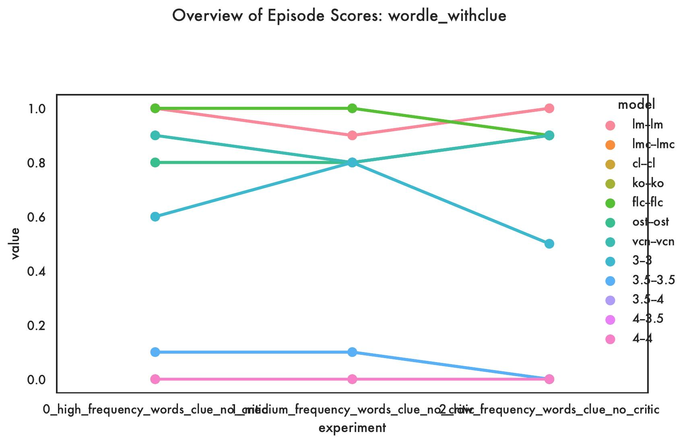
METRIC - Lose
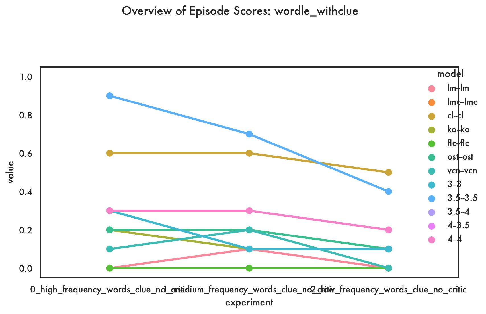
METRIC - Main Score

METRIC - Played
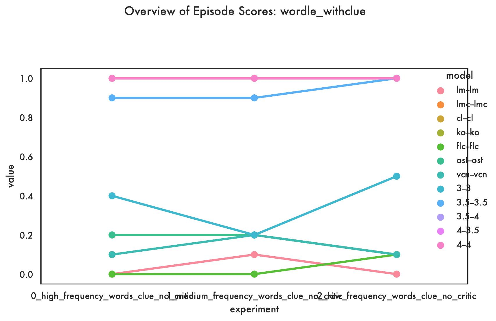
METRIC - Success
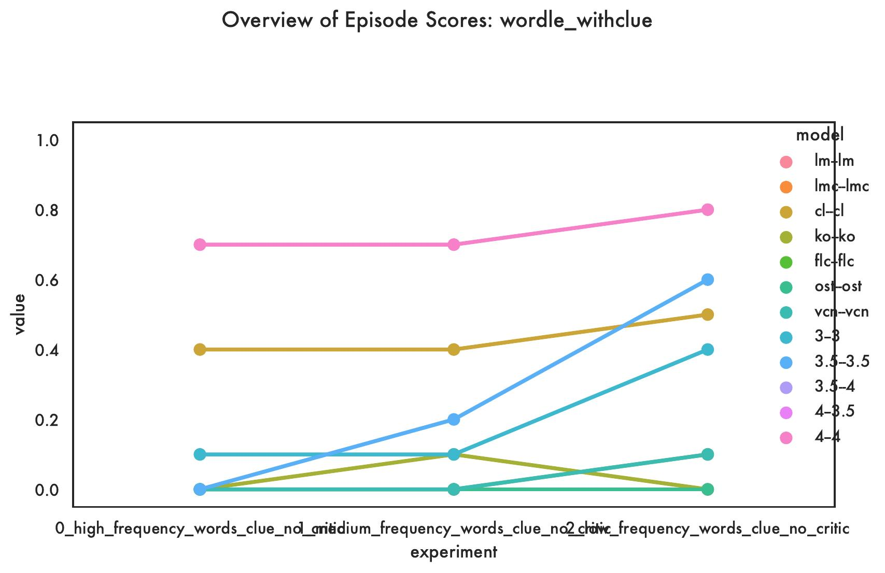
Leaderboard - With Critic
| Models | Experiment | Aborted | Lose | Main Score | Played | Success |
|---|---|---|---|---|---|---|
| 3–3 | 0_high_frequency_words_clue_with_critic | 80 | 10 | 50.0 | 20.0 | 10.0 |
| 1_medium_frequency_words_clue_with_critic | 90 | 10 | 0.0 | 10.0 | 0.0 | |
| 2_low_frequency_words_clue_with_critic | 60 | 10 | 62.5 | 40.0 | 30.0 | |
| 3.5–3.5 | 0_high_frequency_words_clue_with_critic | 10 | 60 | 27.77777777777778 | 90.0 | 30.0 |
| 1_medium_frequency_words_clue_with_critic | 50 | 30 | 10.666 | 50.0 | 20.0 | |
| 2_low_frequency_words_clue_with_critic | 10 | 90 | 0.0 | 90.0 | 0.0 | |
| 3.5–4 | 0_high_frequency_words_clue_with_critic | 10 | 60 | 12.962222222222222 | 90.0 | 30.0 |
| 1_medium_frequency_words_clue_with_critic | 20 | 70 | 3.125 | 80.0 | 10.0 | |
| 2_low_frequency_words_clue_with_critic | 30 | 40 | 15.475714285714286 | 70.0 | 30.0 | |
| 4–3.5 | 0_high_frequency_words_clue_with_critic | 0 | 30 | 50.0 | 100.0 | 70.0 |
| 1_medium_frequency_words_clue_with_critic | 0 | 40 | 37.5 | 100.0 | 60.0 | |
| 2_low_frequency_words_clue_with_critic | 0 | 40 | 52.5 | 100.0 | 60.0 | |
| 4–4 | 0_high_frequency_words_clue_with_critic | 0 | 20 | 52.0 | 100.0 | 80.0 |
| 1_medium_frequency_words_clue_with_critic | 0 | 20 | 44.999 | 100.0 | 80.0 | |
| 2_low_frequency_words_clue_with_critic | 0 | 30 | 50.333 | 100.0 | 70.0 | |
| cl–cl | 0_high_frequency_words_clue_with_critic | 80 | 20 | 0.0 | 20.0 | 0.0 |
| 1_medium_frequency_words_clue_with_critic | 37.5 | 37.5 | 40.0 | 62.5 | 25.0 | |
| 2_low_frequency_words_clue_with_critic | 40 | 40 | 33.333333333333336 | 60.0 | 20.0 | |
| flc–flc | 0_high_frequency_words_clue_with_critic | 100 | 0 | 0.0 | 0.0 | |
| 1_medium_frequency_words_clue_with_critic | 100 | 0 | 0.0 | 0.0 | ||
| 2_low_frequency_words_clue_with_critic | 90 | 0 | 100.0 | 10.0 | 10.0 | |
| ko–ko | 0_high_frequency_words_clue_with_critic | 100 | 0 | 0.0 | 0.0 | |
| 1_medium_frequency_words_clue_with_critic | 100 | 0 | 0.0 | 0.0 | ||
| 2_low_frequency_words_clue_with_critic | 100 | 0 | 0.0 | 0.0 | ||
| lm–lm | 0_high_frequency_words_clue_with_critic | 80 | 20 | 0.0 | 20.0 | 0.0 |
| 1_medium_frequency_words_clue_with_critic | 88.8889 | 11.1111 | 0.0 | 11.11111111111111 | 0.0 | |
| 2_low_frequency_words_clue_with_critic | 100 | 0 | 0.0 | 0.0 | ||
| ost–ost | 0_high_frequency_words_clue_with_critic | 80 | 20 | 0.0 | 20.0 | 0.0 |
| 1_medium_frequency_words_clue_with_critic | 100 | 0 | 0.0 | 0.0 | ||
| 2_low_frequency_words_clue_with_critic | 80 | 20 | 0.0 | 20.0 | 0.0 | |
| vcn–vcn | 0_high_frequency_words_clue_with_critic | 80 | 20 | 0.0 | 20.0 | 0.0 |
| 1_medium_frequency_words_clue_with_critic | 80 | 20 | 0.0 | 20.0 | 0.0 | |
| 2_low_frequency_words_clue_with_critic | 80 | 20 | 0.0 | 20.0 | 0.0 |
Detailed results for the wordle games (+Critic variant).
Plots
METRIC - Aborted
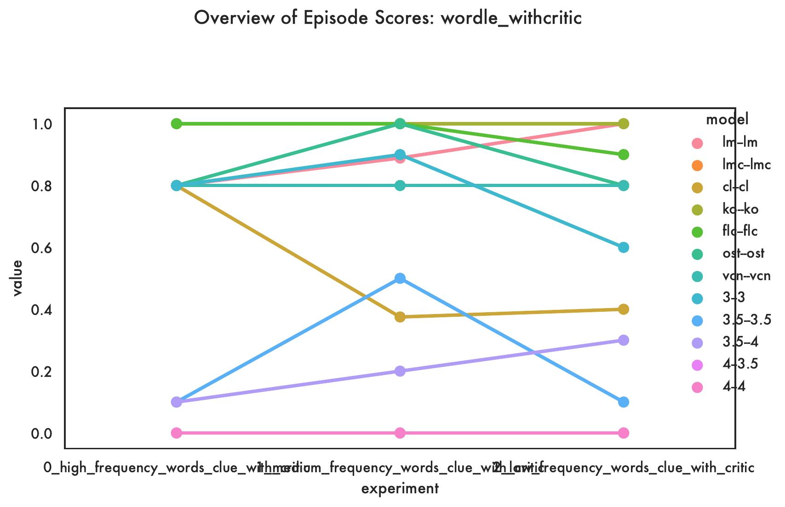
METRIC - Lose
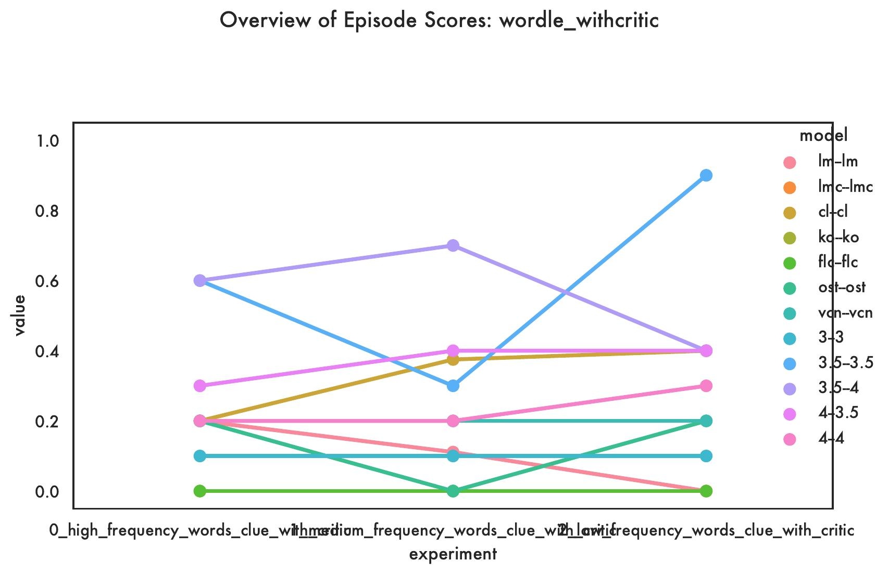
METRIC - Main Score

METRIC - Played
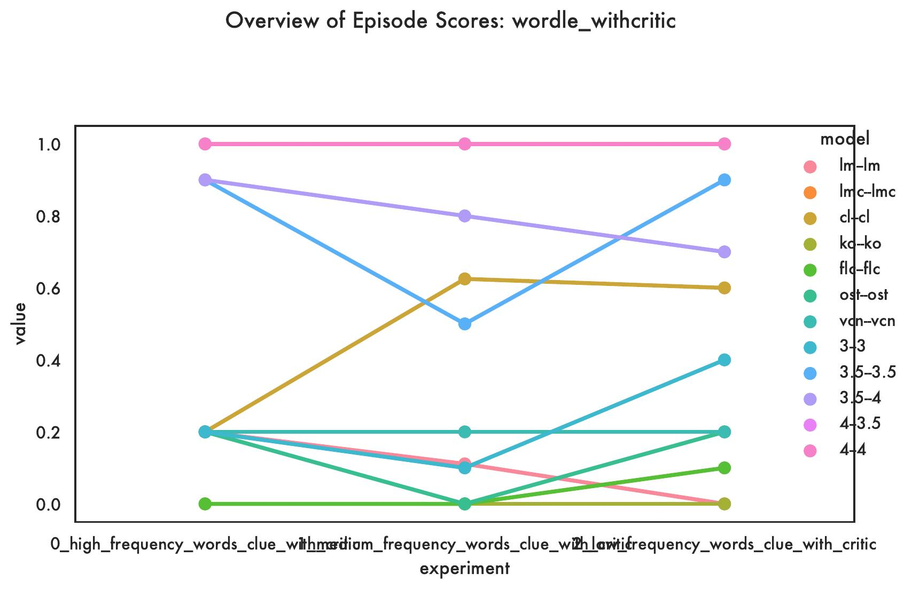
METRIC - Success
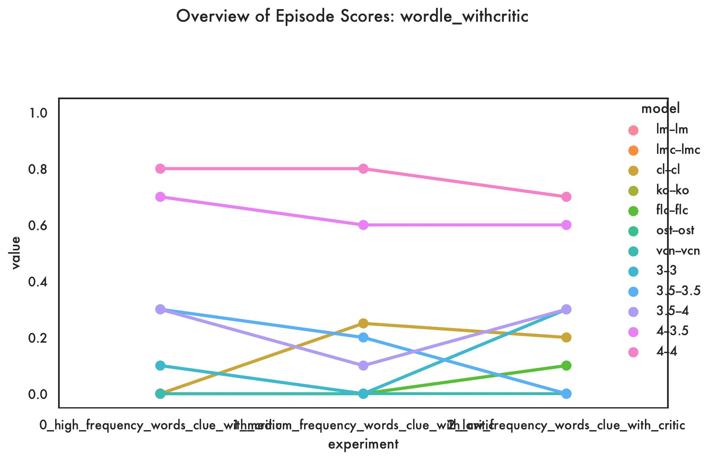